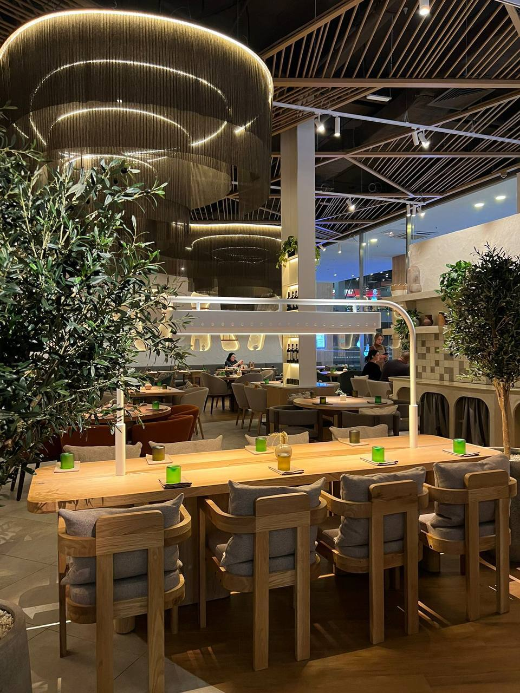
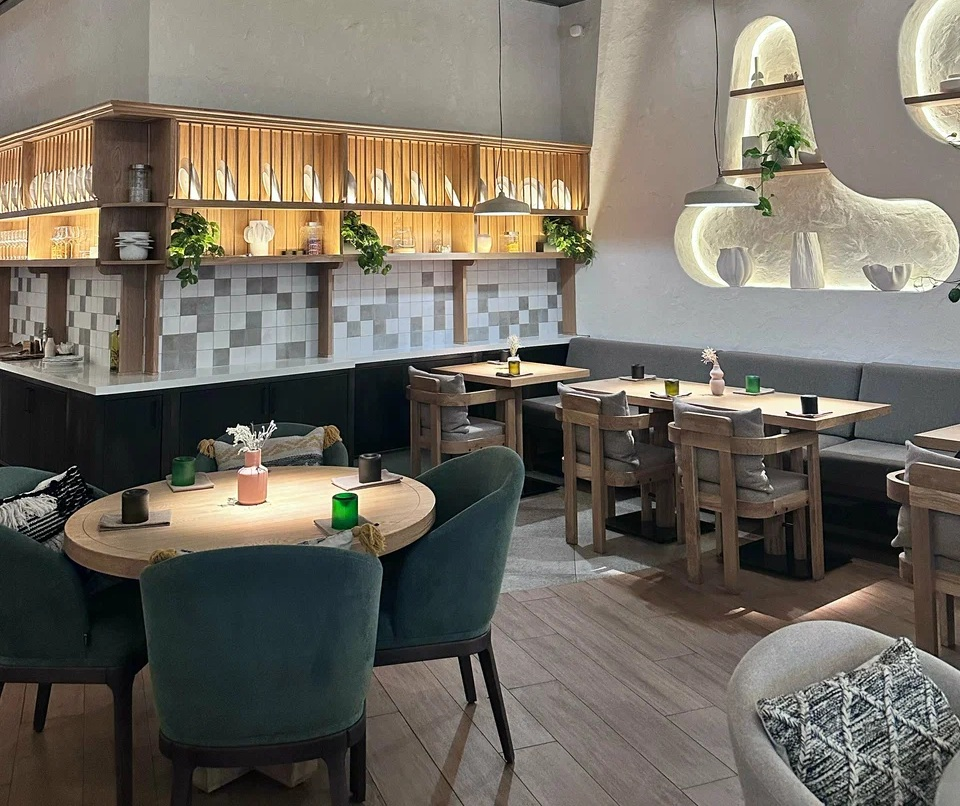
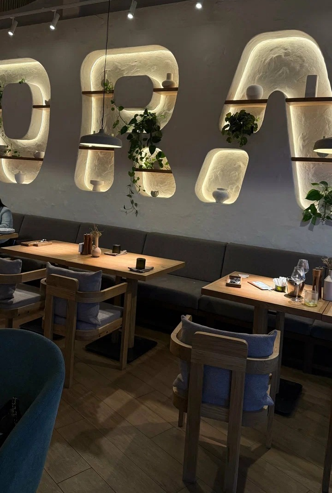
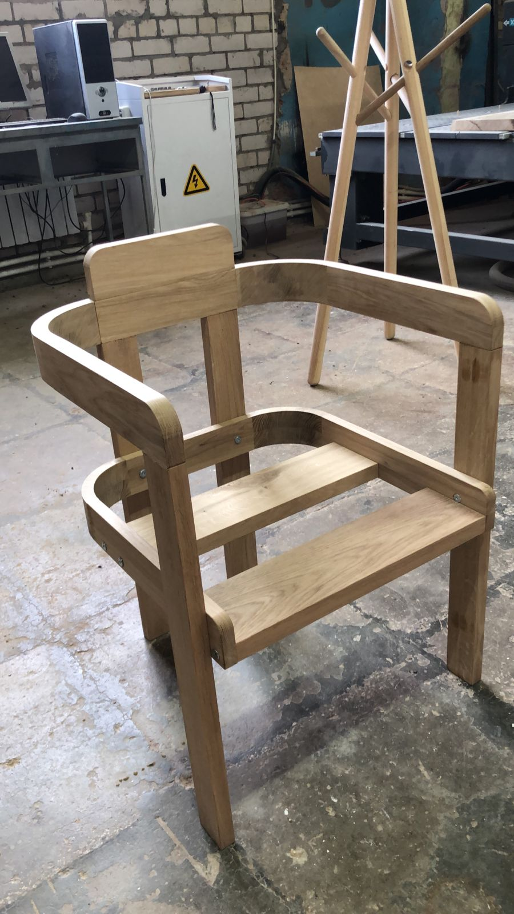
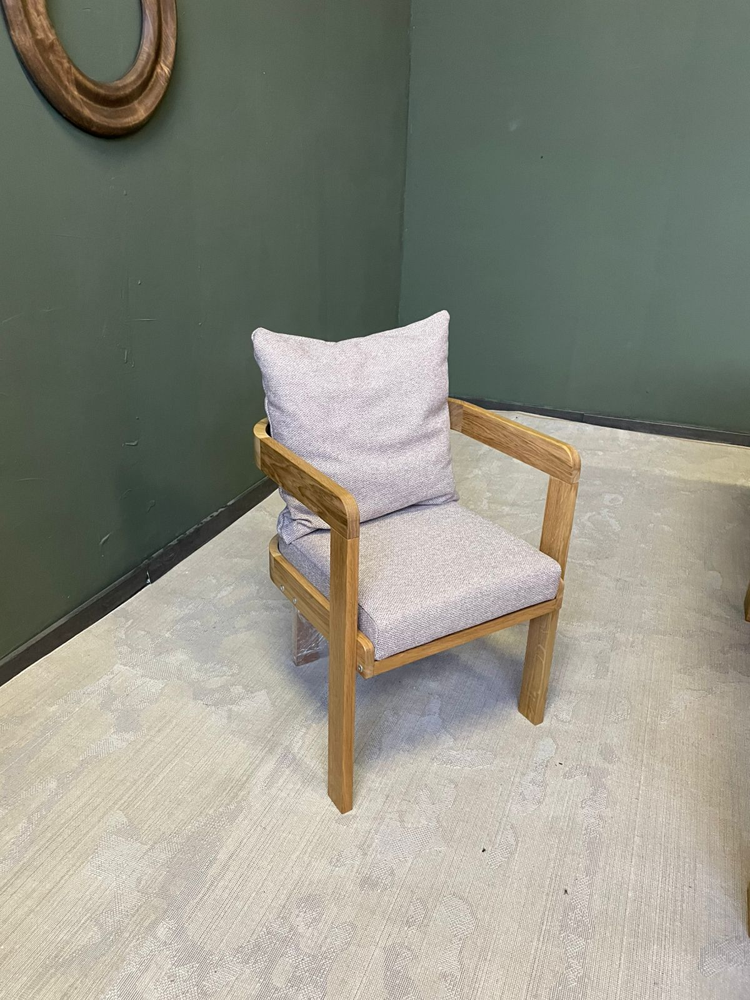
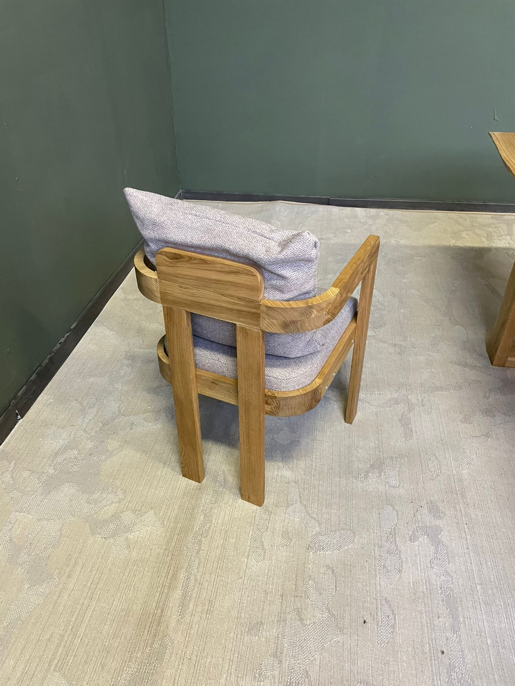
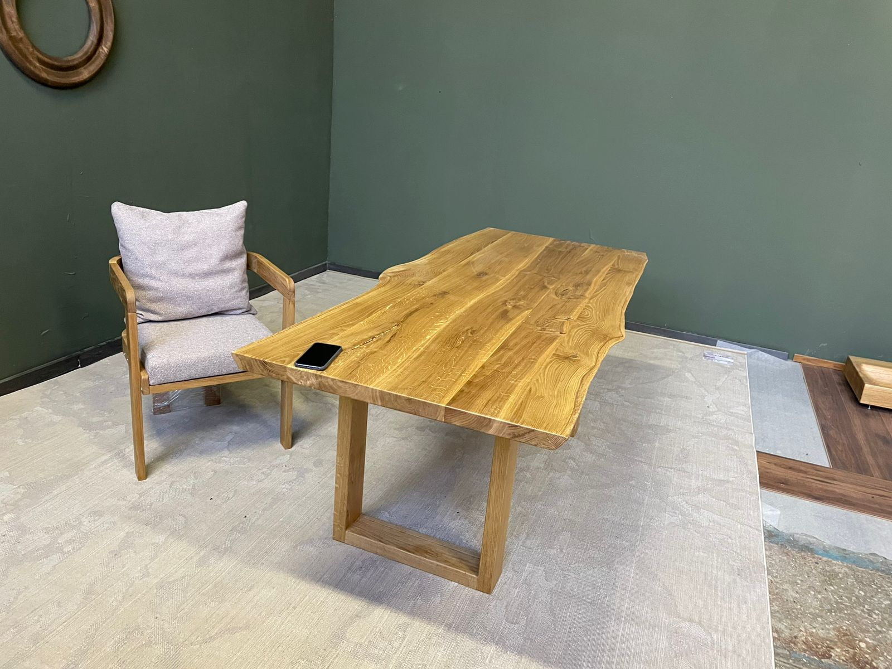

Osteria Lora — Самара
Разработка и производство авторских стульев и столов для ресторанного интерьера Osteria Lora. Проект включал полный цикл создания мебели: проектирование конструкции, изготовление деревянных каркасов, производство мягких элементов, подбор материалов и финальную сборку готовых изделий.






